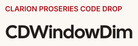

Home | Getting Started | Using the Template | Task Guides | What's New

Current Version: 1.0
Build: 034
Release Date: 11-18-26
Last Updated: 11-18-2026
Copyright (c) Clarion ProSeries by LANSRAD. All rights reserved.
Add the global extension. Compile. You’re done.
Open Global Extensions in your Clarion APP, add
cdWindowDim - Global Settings, and compile. The
standard black dimming effect works automatically for supported
browse/update windows and MESSAGE(), STOP()
and HALT() dialogs. No edits to individual browse
procedures or existing message calls are needed. Get started.
Draw attention to the active window.
When a user opens an update form, cdWindowDim can automatically dim the browse behind it and restore the browse when the form closes. The active form stays clear and easy to read.
The default effect needs no additional configuration. Developers who want more control can choose an overlay color and strength, customize individual browses, or use code templates for other windows and report previews.
| I want to... | See... |
|---|---|
| Dim my normal browse/update windows | Getting Started |
| Customize dimming colors | Window Appearance |
| Dim a window opened by a normal procedure call | Manual Dim and Restore |
| Dim a window launched with START | Dimming a Window Started with START |
| Give a message a black, blue, or red background | Custom Colored Messages |
| Add an enable/disable button | Runtime Dimming Controls |
| Write the function calls myself | Hand-Coded Integration |
Home | Getting Started | Using the Template | Task Guides | What's New